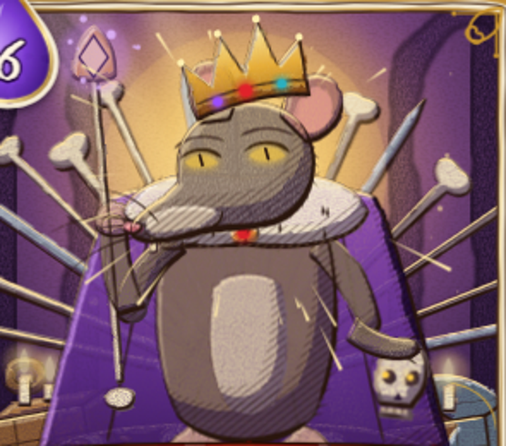
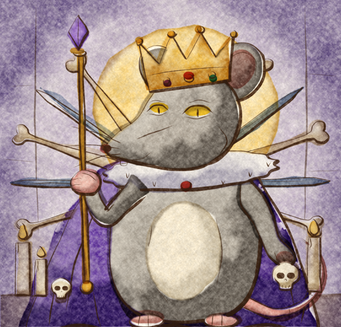
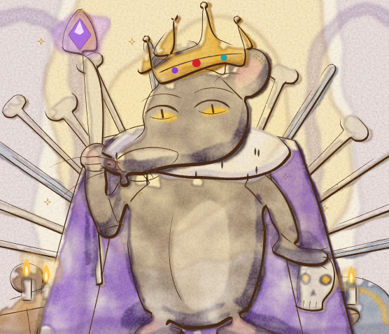
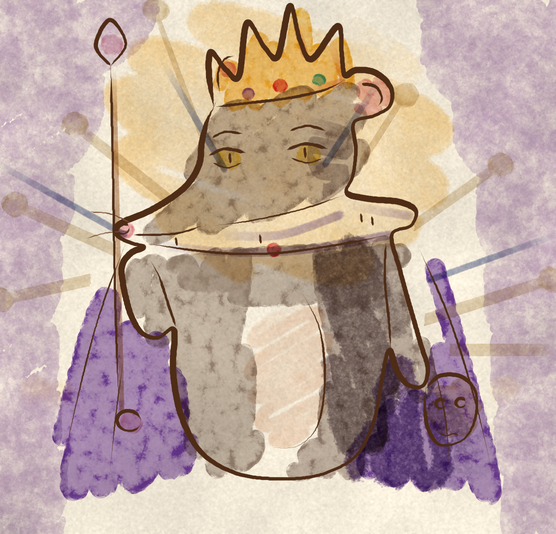
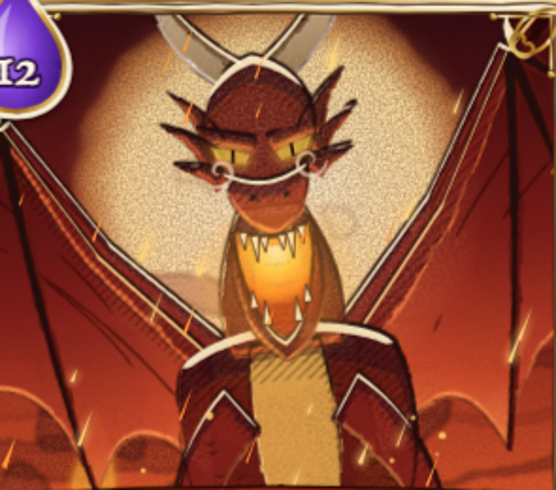
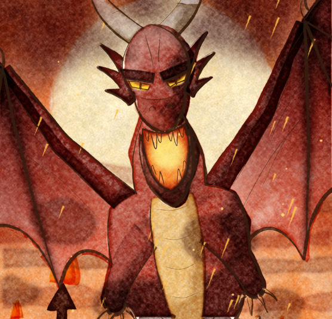
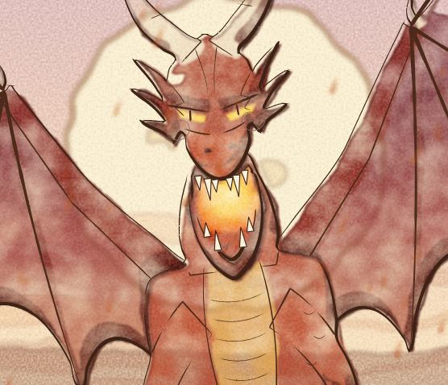
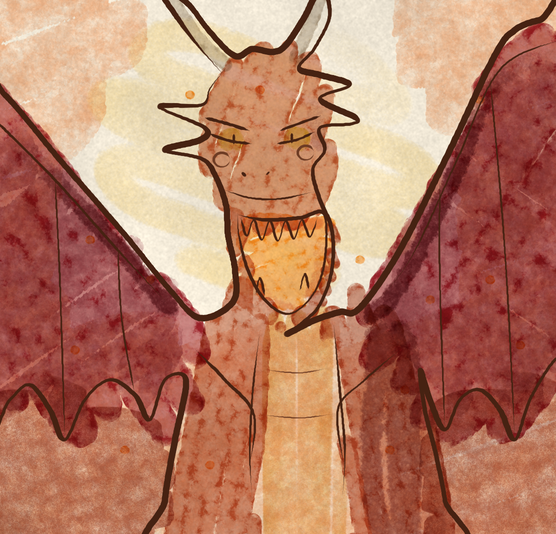

Mesmas poses da v2. Pedido: um contorno contínuo por figura (sem formas geométricas empilhadas), traço com pressão e aquarela solta por baixo. A primeira coluna é a v2 pintada, para comparar. Clique numa imagem para ampliar.
Rei dos Ratos

v2 pintada (referência)Recorte da arte da v2 (moldura A).

Blender Grease PencilTraços desenhados à mão por pontos, com pressão; aquarela feita por fora. Linha mais limpa das três.

SVG com formas unidasAs peças da v2 fundidas em silhuetas, contorno de largura variável. Mantém mais detalhe do fundo.

Pincéis do KritaNanquim G-pen e aguadas reais do Krita. Aquarela mais orgânica, traço e formas mais simples.
Dragão Ancião

v2 pintada (referência)Recorte da arte da v2 (moldura A).

Blender Grease PencilLê bem, castelos em chamas e lua; asas ainda chapadas.

SVG com formas unidasTraço fino e elegante; braços ainda retos, castelo escondido.

Pincéis do KritaAguada com granulação de verdade; pouco contraste, quase tudo vermelho.